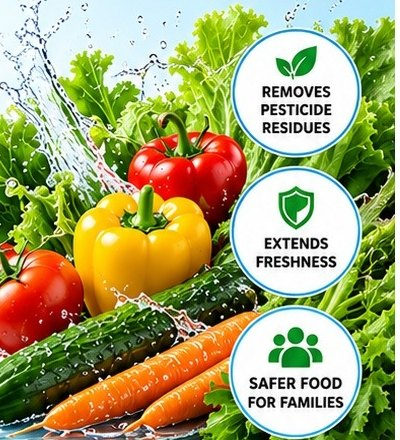
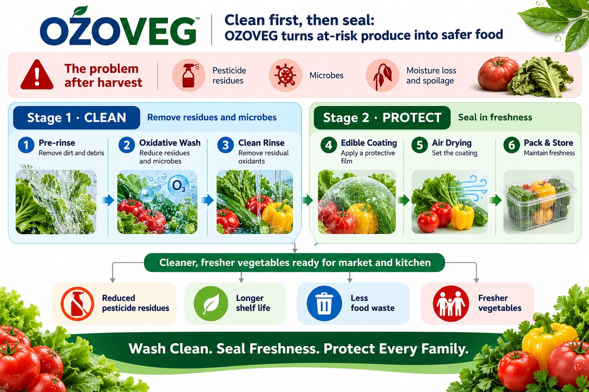
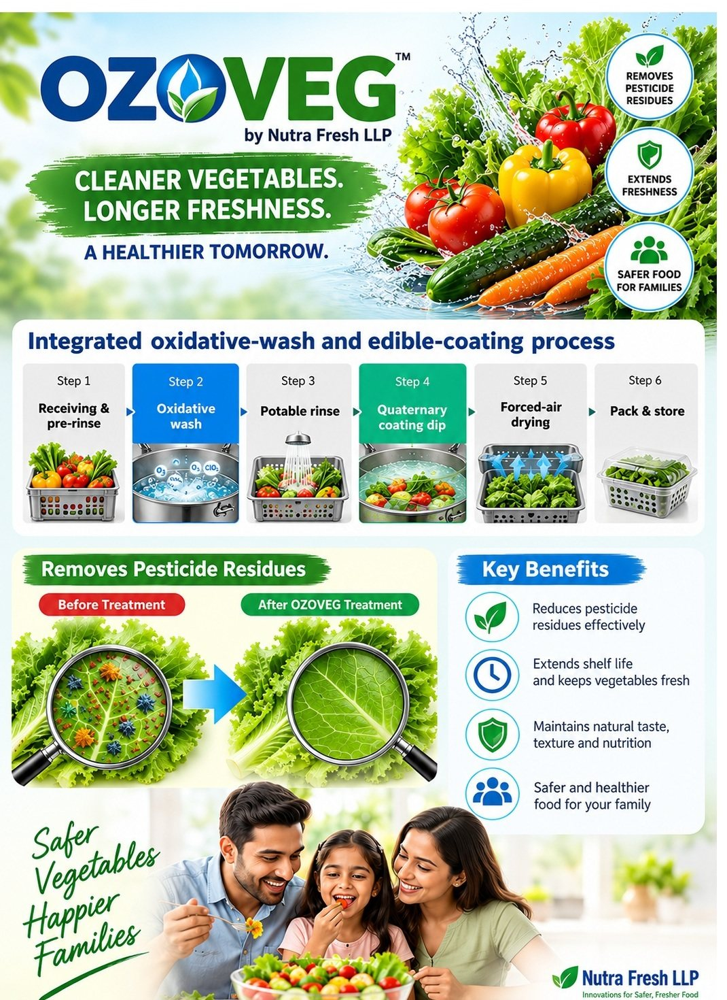

Clean first, then seal
OZOVEG pairs an aqueous oxidative wash with a thin, four-component edible coating — so produce reaches the kitchen cleaner, stays crisp longer on the shelf, and is wasted less along the way.
Two jobs in one continuous line
OZOVEG is a post-harvest technology from Nutra Fresh LLP. It lowers pesticide residues on the surface of vegetables, and it slows the moisture loss and spoilage that follow harvest.
The concept is built for the people who move vegetables from farm to plate at scale. Its promise to society is simple and practical: families should not have to choose between eating more vegetables and worrying about what is on them, and farmers should not lose a large share of their harvest to wilting and rot before it is sold.
OZOVEG treats both problems at the single point where they can be addressed most efficiently — the wash-and-pack stage between field and market.

Residues on the plate, losses in the chain
Residues that water alone can’t remove
Modern vegetable farming relies on pesticides to protect yields. Used correctly with proper pre-harvest intervals, most residues fall within permitted limits. In practice, intervals are often shortened to meet market timing, sprays are repeated, and products are sometimes used on crops they were not approved for.
Leafy greens, tomatoes, capsicum and cucumbers — often eaten raw — carry the greatest risk. A quick household rinse removes loose dust, but many pesticides are oily and cling to the waxy cuticle. Consumers soak vegetables in salt, vinegar or baking soda, buy expensive organic produce, or simply eat fewer fresh vegetables.
Freshness lost before the sale
The moment a vegetable is cut from the plant, it keeps respiring, loses water through its skin and becomes a target for spoilage microbes. In warm climates with fragmented cold chains, a large share of produce wilts, softens or rots before it is sold.
Every kilogram lost is lost income for the farmer, a higher price for the consumer, and wasted water, fertiliser and labour. Washing is also when spoilage can spread if the wash water is not controlled.
An integrated oxidative-wash and edible-coating process
Six steps on a single line turn a vegetable that left the field carrying residues and losing moisture into one that reaches the consumer cleaner and fresher.

Value at every link of the chain
Farmers & FPOs
Produce that holds freshness longer can travel further, wait for a better price and face fewer rejections. A documented residue-reduction step strengthens the quality story with retail, institutional and export buyers.
Processors & pack-houses
The six steps map onto stations most facilities already run, so adoption is an upgrade rather than a rebuild. Controlled oxidative wash water improves sanitation across the line.
Retail & cold chain
Longer shelf life means less shrinkage, fewer markdowns and better-looking displays — and a clear reason for shoppers to choose treated produce.
Families
Peace of mind at the dining table. Vegetables that stay crisp longer at home are more likely to be eaten than thrown away.

Bringing food safety back to the family table
Food safety is often discussed, but people experience it at the family table. OZOVEG’s aim is a food system in which:
- washing away residues is a standard step rather than a household worry;
- fresh vegetables survive the journey from farm to city without spoiling;
- a parent can hand a child a slice of tomato or cucumber without hesitation.
For society as a whole, lower post-harvest loss means more food from the same land and water, and lower dietary pesticide exposure is a quiet but real contribution to long-term public health.
Help us scale OZOVEG
Nutra Fresh invites processors, retailers and farmer organisations to join in validating and scaling the concept so its benefits reach every kitchen.